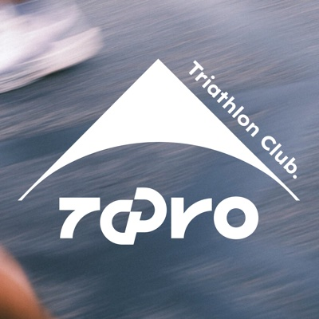

TO PRO 桃園鐵人三項俱樂部
@topro.triathlon
TO GROW EVERY DAMN DAY
游泳・跑步・單車
TO GROW EVERY DAMN DAY
游泳・跑步・單車
TO GROW EVERY DAMN DAY
游泳・跑步・單車
專業跑步課程
⌄
報名中
跑者專項肌力訓練
(課程可分開報名)
已額滿
Vol. 19 一四常訓跑班·臺北
已額滿
Vol. 02 五常訓跑班·板橋
- 所有課程（含額滿班）皆可私訊官方 LINE 預約單堂體驗 -
游泳課程
⌄
報名中
新一期游泳班
客製化課程
⌄
專業跑步課程
游泳課程
✦ 當月限定活動 ✦
⌄
團練行事曆
⌄
加入官方 LINE．諮詢三鐵訓練計劃
⌄
© 2026 TO PRO 桃園鐵人三項俱樂部